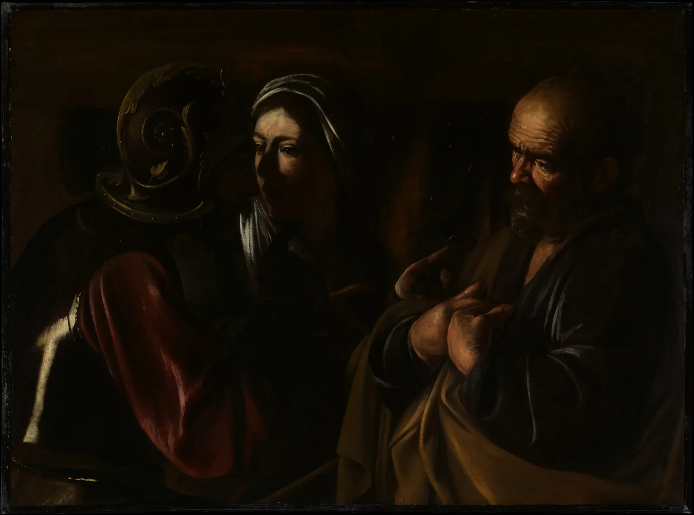
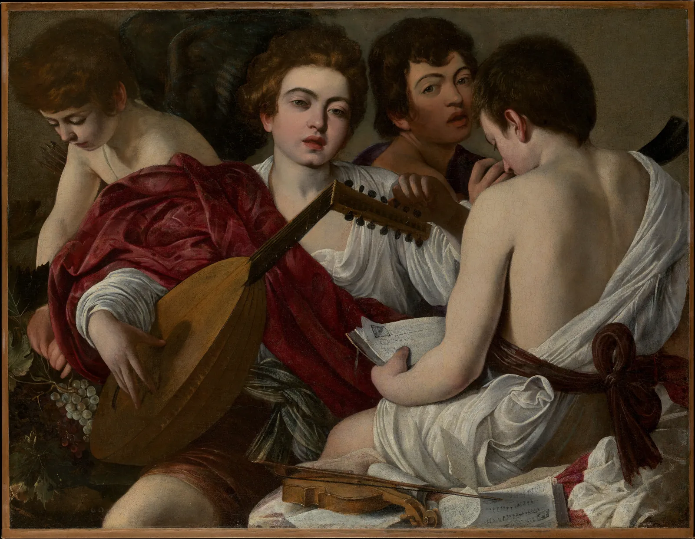
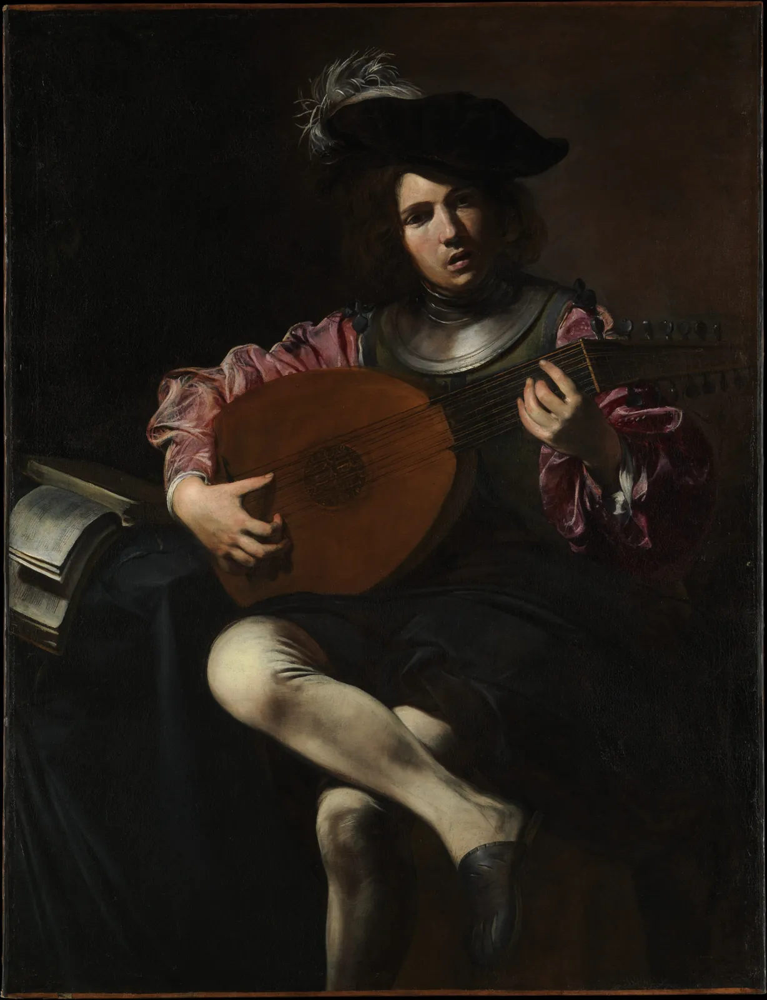
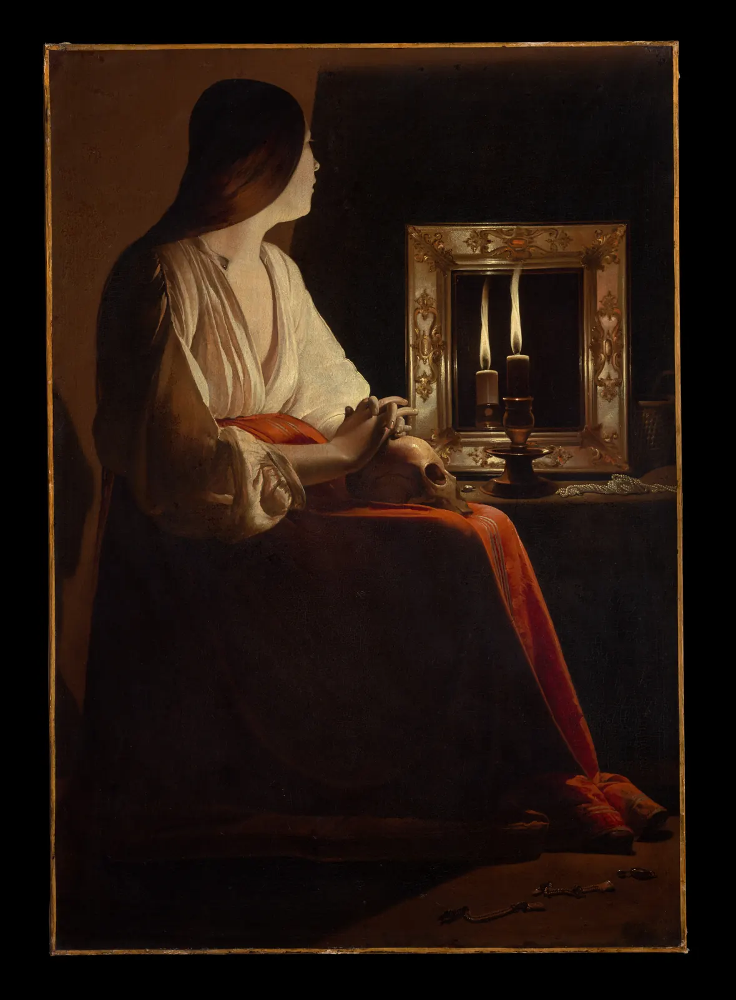
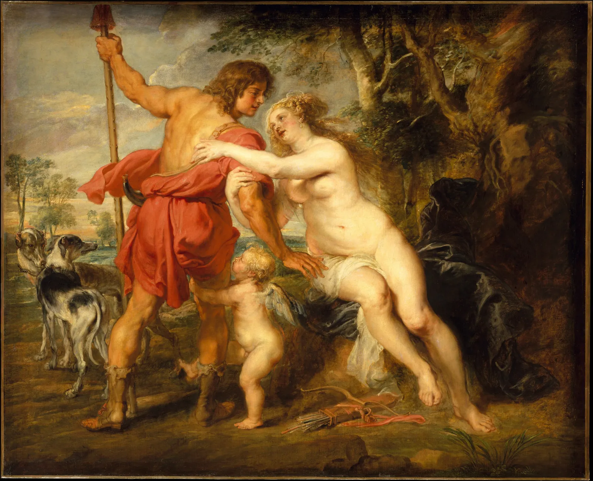
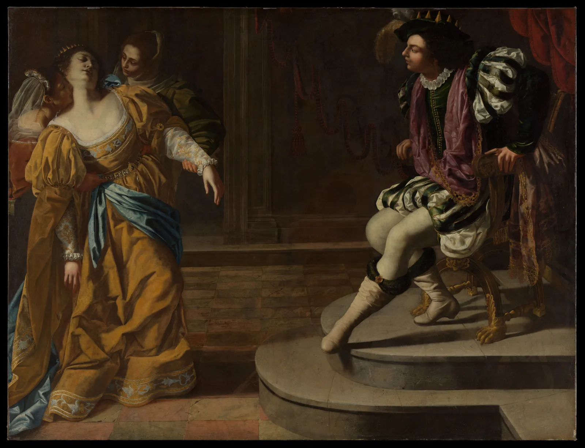
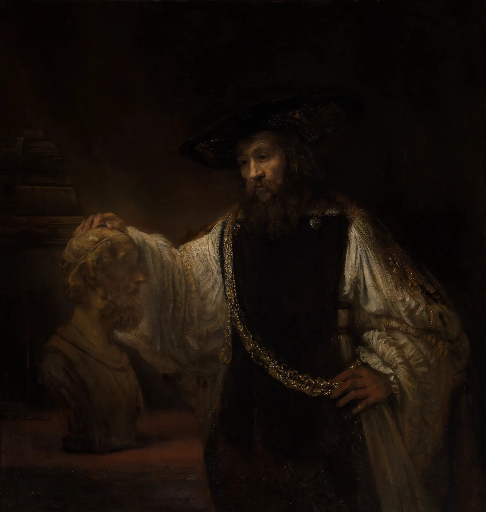
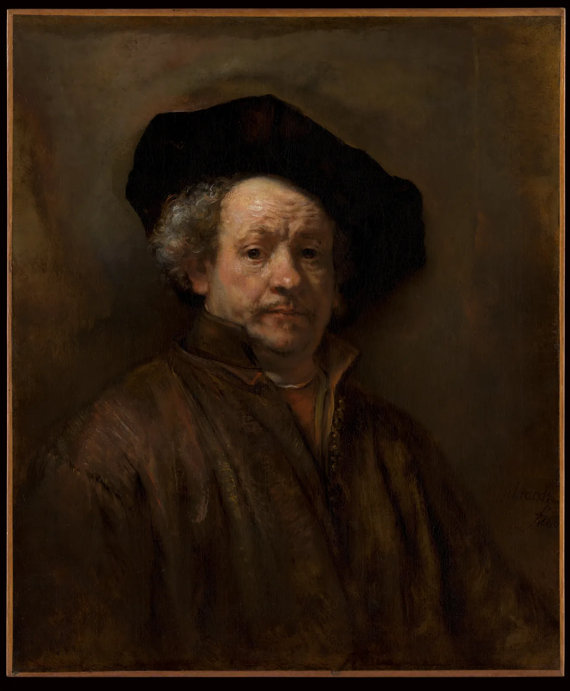

바로크: 빛과 어둠
정전이 된 밤, 촛불 하나를 켜면 방이 달라진다. 촛불 가까운 얼굴은 금빛으로 떠오르고, 방의 구석과 천장은 사라지며, 무엇을 볼지는 빛이 정한다. 1600년 무렵 로마에서 카라바조라는 화가가 이 경험을 그림의 중심에 놓았다. 인물들은 칠흑 같은 어둠 속에서 한 방향의 강한 빛을 받고, 장면은 무대 위의 한 순간처럼 터져 나온다. 이 장은 그 빛과 어둠을 재 본다. 어둠이 화면의 몇 퍼센트를 차지하는지, 빛이 거리에 따라 얼마나 빨리 줄어드는지, 사선이 어떻게 움직임을 만드는지, 그리고 렘브란트가 빛을 물감의 두께로 어떻게 쌓았는지.
- 키아로스쿠로와 테네브리즘을 구별하고, 한 방향의 빛이 형태를 드러내고 지우는 방식을 시뮬레이터로 본다.
- 작품 사진의 명도 분포를 재서 르네상스 그림과 카라바조 계열 그림의 "어둠의 넓이"를 비교하고, 사진·바니시의 한계를 안다.
- 빛이 거리의 제곱에 반비례해 줄어든다는 법칙으로 촛불 그림과 창가 그림의 차이를 설명한다.
- 바로크의 사선 구도와 운동을 작품 위에서 읽고, 화면의 테두리 방향 분포로 확인한다.
- 렘브란트의 임파스토가 빛을 받는 방식을 보고, 모든 바로크가 어둡지는 않다는 것을 안다.
어둠 속 한 줄기 빛
아래 그림은 카라바조가 세상을 떠난 1610년에 그린 「성 베드로의 부인」이다. 예수가 붙잡혀 간 밤, 제자 베드로가 불가에서 "너도 그 사람과 한패지?"라는 물음에 세 번 그를 모른다고 한 이야기의 한 장면이다. 왼쪽의 하녀가 두 손가락으로 베드로를 가리키고, 투구를 쓴 병사의 손가락도 그를 향한다. 베드로는 두 손을 가슴에 대고 부인한다. 배경은 아무것도 없는 어둠이고, 빛은 왼쪽 위 어딘가에서 세 얼굴과 손에만 떨어진다.

17세기 유럽 미술을 흔히 바로크(Baroque)라고 부른다. 포르투갈어로 "일그러진 진주"를 뜻하는 말에서 왔다는 설명이 널리 알려져 있지만 어원은 확실하지 않다. 분명한 것은 18세기 비평가들이 이 말을 "지나치게 화려하고 규칙에서 벗어난"이라는 낮춤말로 썼고, 19세기 말에야 한 시대의 이름으로 중립적으로 쓰이기 시작했다는 점이다. 르네상스(3장)가 질서와 균형을 추구했다면, 바로크는 운동과 감정, 빛의 극적인 대비로 관객을 장면 속으로 끌어들였다. 가톨릭 교회가 종교개혁에 맞서 신앙을 생생하게 전하는 그림을 원했던 것, 궁정과 도시의 새 후원자들이 강렬한 그림을 찾았던 것이 그 배경으로 꼽힌다.
빛과 어둠의 대비로 형태와 극을 만드는 방법을 키아로스쿠로(Chiaroscuro)라고 한다. 이탈리아어로 "밝음-어둠"이다. 레오나르도의 스푸마토(3장)도 넓은 뜻의 키아로스쿠로다. 그중에서도 화면 대부분을 어둠에 잠기게 하고 좁은 빛으로 주인공만 드러내는 극단적인 방식을 테네브리즘(Tenebrism)이라고 부른다. "어두운"을 뜻하는 이탈리아어 tenebroso에서 온 말이다. 그림 1은 테네브리즘의 한 극이다.
빛의 방향과 형태
한 방향에서 오는 빛은 형태를 두 가지 방식으로 바꾼다. 빛을 받는 면은 떠오르고, 빛을 등진 면은 어둠에 녹는다. 둘 사이의 경계, 곧 빛이 스치듯 지나는 선(명암 경계선)이 형태의 둥근 정도를 말해 준다. DrawingBook의 명암의 단계에서 본 원리다. 바로크 화가들은 여기에 하나를 더했다. 주변을 채우는 은은한 빛(주변광)을 거의 없애는 것이다. 아래에서 광원을 끌고 주변광을 줄여 본다.
한 방향의 빛과 주변광: 형태가 떠오르고 사라지는 곳
주변광을 없애면 윤곽의 일부가 사라진다. 이것을 화가들은 "잃어버린 가장자리"라고 부르며 일부러 쓴다. 모든 윤곽을 다 보여 주면 그림이 오려 붙인 듯 딱딱해지고, 일부를 어둠에 맡기면 관객의 상상이 형태를 완성한다. 테네브리즘은 단지 어두운 그림이 아니라 무엇을 보여 주지 않을지 정한 그림이다.
테네브리즘: 어둠의 넓이
카라바조는 처음부터 이렇게 어둡게 그리지 않았다. 아래 왼쪽의 「음악가들」(1597)은 그가 로마에서 이름을 얻기 시작할 무렵의 그림이다. 소년들의 살결과 흰 천이 화면을 넓게 차지하고 배경도 어둡지만 칠흑은 아니다. 그의 어둠은 그 뒤 십여 년 동안 점점 넓어졌다. 그리고 그의 그림을 본 유럽 곳곳의 화가들, 이른바 카라바지스티(Caravaggisti)가 이 방식을 퍼뜨렸다. 오른쪽은 로마에서 활동한 프랑스 화가 발랑탱 드 불로뉴의 「류트 연주자」다.


"어둠이 넓어졌다"를 숫자로 확인한다. 아래 시뮬레이터는 그림 사진의 모든 점의 명도(L*)를 재어 분포(히스토그램)를 그리고, 기준 명도보다 어두운 점들을 그림 위에 파랗게 칠한다. 히스토그램 위의 손잡이를 끌어 기준을 바꾼다. 비교를 위해 앞 장의 프라 카르네발레(1467)도 넣었다.
어둠의 넓이: 명도 분포 비교
그림 속 광원: 촛불과 창
카라바조의 빛은 대개 화면 밖, 왼쪽 위의 보이지 않는 창이나 등불에서 온다. 프랑스 로렌 지방의 화가 조르주 드 라 투르(Georges de La Tour)는 한 걸음 더 나아가 광원을 화면 안에 그렸다. 아래 그림에서 막달라 마리아는 거울 앞 촛불을 바라본다. 빛의 출처가 보이니, 우리는 빛이 얼굴과 손과 무릎 위 해골에 어떻게 닿고 어디서 끊기는지를 따라갈 수 있다.

촛불 그림의 빛이 유난히 "가까워" 보이는 데는 물리 법칙이 있다. 작은 광원에서 나온 빛은 사방으로 퍼지므로, 거리가 두 배가 되면 같은 빛이 네 배 넓이에 흩어진다. 그래서 면이 받는 빛의 세기(조도)는 거리의 제곱에 반비례한다.
이 식에서 중요한 것은 절대 거리가 아니라 거리의 비다. 촛불에서 30 cm 떨어진 얼굴과 60 cm 떨어진 등은 빛이 네 배 차이 나지만, 3 m 떨어진 창에서 보면 같은 30 cm 차이가 거의 아무것도 아니다. 아래에서 광원을 앞뒤로 옮기며 앞·가운데·뒤 세 물체가 받는 빛을 비교한다.
빛은 거리에 따라 얼마나 줄어드나
1스톱은 사진에서 빛이 절반이 되는 단위다. 사람 눈은 한 장면 안에서 꽤 넓은 범위를 보지만, 그림과 사진은 그 범위를 종이와 물감의 좁은 명도 범위에 담아야 한다. 촛불 그림의 화가는 앞 얼굴과 뒤 벽 사이의 몇 스톱을 어디까지 살리고 어디부터 어둠으로 묶을지 정해야 했다. 드 라 투르는 묶는 쪽을 택했다.
사선과 운동
바로크의 또 다른 표지는 사선이다. 르네상스 그림의 인물과 건물이 수평과 수직의 안정된 틀 안에 서 있었다면, 바로크의 인물은 기울고, 뻗고, 쓰러진다. 플랑드르의 화가 페테르 파울 루벤스(Peter Paul Rubens)의 「비너스와 아도니스」에서 사냥을 떠나려는 아도니스는 오른쪽으로 몸을 내밀고, 그를 붙잡는 비너스는 반대쪽으로 기운다. 두 몸이 만드는 두 사선이 붙잡음과 떠남의 긴장을 만든다. 로마에서 태어나 피렌체·베네치아·나폴리에서 활동한 아르테미시아 젠틸레스키(Artemisia Gentileschi)의 「아하수에로 왕 앞의 에스더」에서는 왕 앞에서 기절하는 에스더가 뒤로 쓰러지고, 왕은 놀라 몸을 일으킨다. 두 사람 사이의 빈 바닥이 그 순간의 거리다.


사람이 고른 주축선만으로는 "사선이 많다"를 확인하기 어렵다. 아래 시뮬레이터는 두 가지를 함께 보여 준다. 그림 위의 선 두 개는 이 책이 고른 주축이다(손잡이를 끌어 바꿀 수 있다). 오른쪽 장미 모양 그래프는 그림 픽셀에서 계산한 모든 테두리의 방향 분포다. 밝기가 바뀌는 곳마다 그 경계가 어느 방향으로 뻗는지 재서 모았다.
사선 읽기: 주축선과 테두리 방향 분포
사선은 방향이 있는 힘으로 읽힌다. 수평선은 쉬고, 수직선은 서 있으며, 사선은 넘어지거나 일어서는 중이다. CompositionBook의 점·선·면과 시선의 흐름에서 다룬 원리를 바로크 화가들은 이야기의 가장 극적인 순간, 곧 움직임이 멈추기 직전의 한 박자를 고르는 데 썼다. 그림 1의 손가락들도 왼쪽에서 오른쪽으로 비스듬히 이어지는 시선의 길이다.
렘브란트: 빛을 쌓다
네덜란드의 렘브란트 판 레인(Rembrandt van Rijn)은 카라바조를 직접 보지 못했지만, 위트레흐트의 카라바지스티를 거쳐 빛과 어둠의 그림을 익혔다. 그리고 그것을 전혀 다른 곳으로 데려갔다. 렘브란트의 어둠은 칠흑이 아니라 갈색과 금색이 겹겹이 스민 깊은 공간이고, 빛은 극적인 순간보다 사람의 내면을 비춘다.


렘브란트의 밝은 곳은 물감 자체가 두껍다. 이렇게 물감을 두껍게 올려 붓 자국과 덩어리가 그대로 남게 칠하는 기법을 임파스토(Impasto)라고 한다. 두꺼운 물감은 색으로만 밝은 것이 아니라 실제로 튀어나와 그림 앞의 빛을 받고, 작은 그림자를 드리운다. 반대로 그림자 쪽은 얇고 투명한 글레이즈(3장)로 남겨 빛이 깊이 스며들게 했다. 밝은 곳은 두껍고 불투명하게, 어두운 곳은 얇고 투명하게. 이 대비가 렘브란트의 빛이 화면에서 떠오르는 이유 중 하나다. 아래에서 물감 표면에 비치는 빛의 각도를 바꿔 본다.
임파스토: 두꺼운 물감이 빛을 받는 법
렘브란트의 빛은 무대 조명이라기보다 사람을 향한 빛이다. 그림 7의 철학자는 손을 시인의 흉상에 얹고 생각에 잠겼고, 그림 8의 화가는 꾸밈없이 우리를 본다. 같은 키아로스쿠로라도 카라바조가 사건의 순간을 비췄다면 렘브란트는 그 순간이 지난 뒤의 고요를 비췄다. 빛과 어둠은 기법이지만, 무엇을 비출지는 화가의 질문이다.
모든 바로크가 어둡지는 않다
"바로크는 어둡다"는 요약은 절반만 맞다. 그림 5의 루벤스는 밝은 하늘과 살결, 붉은 천으로 화면을 채웠다. 루벤스의 공방이 그린 거대한 제단화와 궁전 천장화는 빛으로 넘친다. 스페인의 벨라스케스, 로마의 천장 화가들, 네덜란드의 풍경화가들도 각기 다른 빛을 그렸다. 바로크를 묶는 것은 어둠 자체보다 관객을 장면 안으로 끌어들이려는 극적인 연출에 가깝다. 어둠은 그 연출의 한 방법이었다.
같은 17세기, 조선과 명·청의 화가들은 그림자를 그리지 않았다. 광원과 그림자로 입체를 만드는 일은 동아시아 회화의 목표가 아니었고, 먹의 농담과 여백이 공간과 분위기를 맡았다(10장, 11장). 서양식 음영법은 18세기 이후 선교사와 서적을 통해 동아시아에 알려지고 일부 화가들이 받아들였다. 그림자를 그리지 않은 그림을 "입체를 몰랐다"고 읽지 않는 것, 3장의 원근법과 같은 이야기다.
한 줄기 빛 정물 무대
마지막으로 이 장의 도구를 모아, 불을 끈 방에서 정물에 한 줄기 빛을 비추는 장면을 만든다. 탁자 위에 사과 둘, 흰 도자기 병, 책이 있다. 화면 위의 노란 점을 끌어 광원을 옮기고, 광원의 거리와 방 안의 주변광, 빛의 종류를 바꾼다. 결과는 오른쪽 아래 작은 흑백 판과 수치로 함께 본다.
불 끈 방의 정물: 한 줄기 빛 설계기
결국 테네브리즘은 세 가지 선택의 조합이다. 광원을 좁게(원뿔), 가깝게(거리의 비를 크게), 그리고 방을 어둡게(주변광 0). 하나만 바꿔도 장면의 성격이 달라진다. 화가는 물감으로, 사진가는 조명으로, 무대 연출가는 조명기로 같은 결정을 내린다.
그림 읽기 모임 노트
불을 끄는 데 30초, 빛을 고르는 데 일주일
3회차(2027년 9월 18일, 토요일)는 바로크다. 서윤과 한도경은 그림을 보여 주기 전에 먼저 방의 불을 끄고 한 줄기 빛으로 정물을 비추는 시연을 하기로 했다. 문제는 "얼마나 어둡게, 얼마나 가깝게"였다. 서윤은 처음에 휴대폰 손전등을 생각했지만, 이 장의 시뮬레이터로 해 보니 맨 전구처럼 퍼지는 빛은 정물 뒤 벽까지 밝혀 어둠이 생기지 않았다. 도경은 화실에서 쓰는 탁상 스탠드에 검은 도화지를 말아 통을 씌우자고 했다.
거리도 계산했다. 시뮬레이터의 처음 자리처럼 스탠드를 정물의 왼쪽 앞 위에서 앞 사과까지 60 cm에 두면, 30 cm 뒤에 놓은 병까지는 약 80 cm다. (80/60)2 ≈ 1.78, 곧 병는 앞 사과가 받는 빛의 56%만 받는다. 약 0.8스톱이다. 스탠드를 같은 방향으로 200 cm까지 물리면 병까지 약 215 cm, (215/200)2 ≈ 1.16으로 0.2스톱 남짓밖에 차이 나지 않고, 종이 통이 만든 빛의 원뿔도 넓어져 정물 뒤 벽까지 밝아진다. 서윤은 시연을 두 단계로 나누기로 했다. 먼저 스탠드를 2 m 떨어뜨려 비추고, 그다음 60 cm로 끌어당기는 것이다. 같은 빛이 다가오기만 해도 장면이 무대로 바뀌는 순간을 보여 주기 위해서다.
예행연습에서 아이와 함께 오는 참가자가 미리 물었다. "아이가 어두운 데를 무서워하는데 괜찮을까요?" 도경은 계단 쪽 발밑등 하나는 켜 두자고 했다. 시뮬레이터로 해 보니 주변광이 몇 퍼센트 생겨도 정물 쪽 어둠은 크게 줄지 않았다. 서윤은 그 아이를 위해 질문 하나를 카드에 넣었다. "그림 속에서 빛은 어디서 오고 있을까? 손가락으로 가리켜 봐."
| 순서 | 그림 | 읽기 카드의 한 줄(색 · 구도 · 기법) |
|---|---|---|
| 1 | 카라바조, 「음악가들」(1597) | 살결과 흰 천이 넓다 · 네 소년을 빽빽이 · 왼쪽 위에서 오는 한 방향 빛 |
| 2 | 카라바조, 「성 베드로의 부인」(1610) | 사진의 97%가 L* 20 아래 · 손가락들이 만드는 사선 · 배경 없는 어둠과 좁은 빛 |
| 3 | 드 라 투르, 「참회하는 막달라 마리아」 | 촛불의 금빛과 붉은 치마 · 촛불과 얼굴이 마주 보는 축 · 화면 안의 광원 |
| 4 | 젠틸레스키, 「아하수에로 왕 앞의 에스더」 | 금빛 드레스와 보랏빛 옷 · 서로 반대로 기운 두 사선과 빈 바닥 · 연극의 한 순간 |
| 5 | 렘브란트, 「호메로스 흉상을 바라보는 아리스토텔레스」 | 갈색의 깊은 어둠과 금목걸이 · 흉상 → 얼굴 → 손으로 이어지는 빛 · 밝은 곳의 두꺼운 물감 |
핵심 정리
- 키아로스쿠로는 빛과 어둠의 대비로 형태와 극을 만드는 방법이고, 테네브리즘은 화면 대부분을 어둠에 잠기게 하고 좁은 빛으로 주인공만 드러내는 극단적인 키아로스쿠로다.
- 주변광을 없애면 빛을 등진 윤곽이 배경에 녹는다. 테네브리즘은 무엇을 보여 주지 않을지 정한 그림이다.
- 사진의 명도 분포로 재면 카라바조의 어둠은 1597년에서 1610년 사이 크게 넓어졌고(L* 20 아래 약 48% → 97%), 카라바지스티가 이를 이었다. 단, 사진과 바니시·바탕칠의 변화 때문에 원작의 어둠과는 다르다.
- 작은 광원의 빛은 거리의 제곱에 반비례해 줄어든다(\(E = I\cos\theta/d^2\)). 광원이 가까울수록 앞뒤 물체의 빛 차이가 커지고, 넓은 창의 빛은 가까이서도 완만하게 줄어든다.
- 바로크 화가들은 기울고 쓰러지는 몸의 사선으로 운동과 긴장을 만들었다. 테두리 방향 분포로 재면 르네상스 건축 무대보다 가로·세로 테두리가 적고 사선이 많다.
- 렘브란트는 밝은 곳을 두껍게(임파스토), 어두운 곳을 얇고 투명하게 칠했다. 두꺼운 물감은 실제로 빛을 받아 반짝이며, 빛이 스치는 각도에 따라 다르게 보인다.
- 바로크를 묶는 것은 어둠 자체보다 관객을 끌어들이는 극적인 연출이다. 루벤스처럼 밝은 바로크도 있고, 그림자를 그리지 않은 같은 시대 동아시아 회화는 다른 목표를 가진 그림이다.
확인 퀴즈
1. 다음 중 테네브리즘을 가장 잘 설명한 것은?
2. 촛불을 얼굴에서 20 cm 떨어진 곳에 두었다. 얼굴보다 40 cm 뒤(촛불에서 60 cm)에 있는 벽이 받는 빛은 얼굴이 받는 빛의 얼마쯤인가?(작은 광원, 빛을 정면으로 받는다고 가정)
3. 카라바조의 「성 베드로의 부인」 사진에서 화면의 97%가 L* 20 아래였다. 이 결과를 해석하는 태도로 가장 알맞은 것은?
4. 렘브란트의 밝은 부분이 물감을 두껍게 올린 임파스토로 칠해져 있다. 전시실에서 빛이 그림 표면을 옆으로 낮게 스치듯 비출 때 일어나는 일로 가장 알맞은 것은?